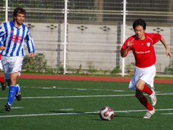
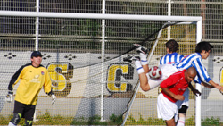

|
ASIJ, Monday 13th October
*Note to self; Don't start with "It was one of those days...definite No No. style? lets see, a hypothetical high school history essay question. can't touch, that's a classic. invent a fictitious player or team that hallucinates about scoring goals the night before at work but never replicates that form on the pitch. maybe. how about pay homage to a great writer by writing in that book's style. nice. milan kundera has been in the news this week.naah too hard..don't have nuff talent... though that opening about Nietzche's question about something along the lines of if life happens an infinite number of times, do some actions take less meaning(lighter) or more of a burden(heavier)?, not sure i understood it correctly but prob could be applied to "If Dan misses sitters over and over, and over and over and over, does it become easier for him to take loads and loads of schtick and thus something lighter for him so he is not bogged down by it or does it start to weigh on his young shoulders and possibly lose the number 11 shirt to someone else? 
ah interesting now, we could even call Dr. Phil to fill us in on this. but nahhh, maybe too Barthezy and his philosophical goalkeeping academy. lets just go conventional. establish the connection with the title in the first paragraph, mention the pregame hype, then put in a cringeworthy attempt at waxing lyrical in the first two paragraphs, giving that inner child who deep down knows he was meant to be a writer at heart an airing. it's just that life is...you know.....then abandon flowery language and just dive into what happened in the match with a droning dryness comparable to the the taste of cardboard or the voice of that guy who narrates all nature docuumentaries, a drone that perhaps only Japan Times can better... try being funny, lots of inside jokes, slag a few of the boys a bit to show how best of mates we are in our team, but pick one to really lay into, look for an easy target. younger the better. invent some nicknames or pass on others you have heard recently and put them in these ' ' things in between the full name...like lets see, Alex 'too-cool-for-school' Sahara. no, doesn't really roll of the tongue smoothly. Guido 'the Germinator' Guido. not bad. mention many players randomly from other teams just to prove you know people. and former legendary palyers too i guess to prove that you are a bit of a historian and our team really values even past contributions. then.... how about some wordplay perhaps?...let's see... lightning spark, bright spark... naaah, already used, must be original...i'll think of sumthn...i wish i knew many french expressions to stick at the end of sentences for no apparent reason...why did i take German in highschool!? ...oh well...c'est la vie... wait, Schadenfreude! good word that one. must find somewhere to stick that one. would have been perfect for a certain Sala player in Nagano last week....then... maybe slip in one or two three or more syllabled words, like profligacy, but must do it subtly... then give your goal due attention,
but also try to take the mick out of yourself to show you are a top banana...use a lot of very english sounding football lingo like the gaffer, and minging and take the mick....wait, wait, don't forget football cliches, a good cliche always goes down quite well, hits the spot like a cider after a game. every time! good work there, ur own simile. Prof Ged would approve. or even try a metaphor, both good. then...ummmm.....must allude to a current event to prove you are fairly well educated, in touch with world affairs, and have an opinion on these matters that you would kindly like to share to with the rest of the league, like a physics expt in the alps or world mkts crashing, or ahhh...nobody has done the Nobel prize yet. maybe talk about experimenting with psychedelic proteins like GFP and the sublime miracle of gene expression, maybe mention transgenic pigs?. nooo... too showy perhaps, the pigs i mean...plus the science thing has already been
 done...well anyway must finish off by claiming amnesia towards the end, making sure you mention all teammates, even those who didnt have a really good game and rack your brains to find a redeeming quality in them like they have good hair, or a good shagpad....must give credit to the opposition, thank the WAGS, the groundsmen, the weathergods, or curse them. yada yada yada, praise the ref. esp if he is a big south american who needs his ego massaged. but it was Quentin this time. he is actually a good ref. and an all around good guy. wish he had made a mistake or had greased hair though so i could slag him a bit, must mention the partiality of the assistant referees... weird it's almost a racial slur now to say that 4 letter L word... oh, and at least one or two pieces of the most obscure and mundane trivia u heard from someone under the influence, googled it n think that made you an authority on the matter...like...let's see, is there no way i can work
candiru into this?...that woulda had them googling furiously.....ah tits, next time. watch out not too many sweat words. or sexual innuendos. just enough to show you're one of the boys... then talk about upcoming games and try to send warnings to other teams that they should quake about your form, in an attempt to have that ferguson-wenger circa 2004/5 pre-game mental thing going on,like anybody ever actually reads these reports....but watch out...don't be arrogant, not too big headed....u might have the whole league chasing you around the pitch trying to kick you........ahh, sounds like this will be just like any other TML report!!! nice one there. some exclamation marks as an ode to a certain famousrowdyunruly schoolboy who recently turned 68... Happy bday granpa n get well soon.
and the report must be long. longer than the last one you wrote 2 years ago that no one finished reading. so no one has asked you to write one again. and just accept yours will never be anywhere near as good as Kev Gray's)
BFC had a question to answer after the last two games; an inexplicable 1-1 draw against Celts who seem to be improving every time we play them, and a 3-2 loss against YCAC. And answer they did. Emphatically. Y-E-S W-E C-A-N.
Granted BEFC aren't one of those teams that make you quiver in your Copa Mundials (that's just for you Kiwi Jon), but;
1. They have on occasion proven to be a bit of a banana skin for the title holders.
2. They always seem to raise their game against us coz we all know how they love to play against us.
3. They had amongS.t theI.r M.idst a certain fO.rmer BFC maN. who will remain unnnamed brazenly making his debut for them against us and we all know how he loves to play against us. Can't join them, beat them? or try to at least..
And with Hibs scoring spree showing no signs of abating, a strong showing here was required to keep abreast and more importantly snuff out those whispers of a spent force that have been creeping thru Tokyo budo vine.
Beautiful turf on ASIJ, 3pm kick off. Both teams started somehow languidly on one of those incredibly beautiful and pleasantly warm sunny days that could almost convince you there is a God. A weather god at least. An intelligent weather designer perhaps?
Carlos was strolling around in the centre half brandishing the baton and with a posse of small, mostly young, fit, skillful, speedy and willing minions at his disposal, newly kitted BFC in red n white were soon upping the tempo quicker than Felipe Massa can bottle a race. Shosuke on the left, Dan on the right, Taka overlapping from deep left, and Alex Sahara partnering Jon Day upfront were all quick to jump into action at the slightest wave of the maestro's wand. Chances were created in such quick succession that it's hard to pick one. Danny 'Yanagisawa' Clark's glancing/diving header at the far post from Taka's quality cross probably deserves a mention as the young 'un continues in his quest to be the league's Top Scatterer this season. He's claiming something about sprinting a Theotical 187 yards in 2.3 seconds to get to the cross and his hairband coming loose so one of those locks flowing into those beautiful green eyes blocking view and a big bad
mean defender closing him down and a hearing footsteps of a boogie man only visible to him....
voice of DR.PHIL: Go on son, we're still listening.
Their keeper however did stand tall, make loud calls, rile the troops into more action; they chased and closed down more in the middle and tackled at critical times at the back to stifle BFC's attacks. The keeper was easily man of the match in those first 25 min making quite a few saves including one from a 25 yard belter from Carlos. The Paraguayan by the way is actually in the process of trademarking that shot before Geovani in Hull City does.
The first goal though was proving elusive but thankfully patience was the word on this day. After about 20 minutes the gaffer decided to tinkle things around and hand three more eager beavers their season debuts. Keisuke in for the hardworking Sahara upfront immediately started nibbling away. A few minutes later Evs coming back from injury to slip on the costume for the "The Travelling Band of The Amazing Carlos and his band of interchangeable dancing minstrels" on the right midfield role, while Garry 'Get-in!' Robertson arriving from a 2 week tour of the islands to slot in at right back. And it was the Shetland's own future Guizer Jarl who minutes later provided the spark we lacked (wink wink, see what i did there) as he lofted the ball beautifully into the six yard box. Eager Pablo, the hardest working man in box to box overland shipping business, arrived from midfield to head home via his foreface, left ear, right shoulder and finally off the
tracking defender's head. Soon to be dad Pablo blushed a bit but smiling Pablo is claiming it. Perhaps too eager Pablo then cluttered late into the British Embassy's Argentinian captain Fernando (Fellow believers, who said football can't bring people together, bridge gaps, gap bridges, bring peace and harmony and love and lots of hugging on pitches in all corners of the the world!!). The foul though definitely not 'pre-ordained' was a tad late and a wee clumsy so sheepish looking Pablo went into Q's tiny little notebook that he tacks in sometimes into his front top left pocket and sometimes in his bottom right back pocket just to keep you guessing. Not a peep from remorseful Pablo. How many Pablos can you spot? The BEFC were sure having trouble counting them because practicing-for-marathon Pablo was also pinging around everywhere and popping up there to quash any plans of an embassy attack. Jack Bauer.
BEFC only had a few tame shots in the first half and two of them were straight from kickoff. I guess they were trying to lob our very short keeper Teppei who could otherwise have brought a GQ to check out the autumn collection. You cant lob the keeper though if the ball bounces twice. Come to think of it he should have actually brought a GQ because we are not having those shoes again. A team can only suffer one Jon Best and some are still trying to overcome the emotional scars that the sight of those boots left upon us. Two years on.
1-0 at half time.
Half time talk from new captain James 'more-of-the-same' Morson was mainly "More of the same boys, more of the same." A few well worn out cliches about allowing the rounded pig skin perform a function or is it a stroll?, and so on were thrown in for good measure of course and then more of "more of the same". Being a inside a kindergarten and the teacher amongst us meant no Marlboro Lights for the fast, young, healthy boys. Had to do with bananas! Yuck!
Secondo tempo, more of the same-o. One way traffic, goals not coming but patience in the build up. About 10 minutes in? the floodgates opened and all the minions rushed in to get a piece of the action. The second one was from route one as a good goal kick from Teppy suddenly turned into an assist in the hands of rising star Keisuke who controlled well, unleashed a burst of speed to zip past his man before calmly rounding the keeper. Then Evs got onto a Jon Day dink over the defence, "the burly defender seems to have done enough to cover but then he has hesitated for a moment there when he sees the keep has come out. Both have stopped for a split-second though to admire each other's haircuts and a slight window of opportunity has opened for the Eggman to sneak a swing of of his long left limb, not shaven unlike Shosuke, to lift it over the keeper."
3-0. The name you are thinking of is Faustino Asprilla.
Goal number four came from lively Alex Sahara who was back in the foray in left midfield. The other young brash hairband-totting fashionista on the team danced to his right foot like Shosuke taught him to in preschool last week, had time to take out his pacifier and fasten his hairband while lining up his shot, then hit a strong rising shot edge of the box that looked destined to nest in the far right netting but came off streaking Pablo's arse a few yards in front to end up in the bottom left with the stranded keeper already having started diving. Yes, you guessed right, two goal wanting Pablo is also claiming that. Little notbook from top left pocket this time says Alex though. The diving keeper eventually hit the ground just before sunset. Ageism intended.
Shosuke, Jon, Dan and Taka were all bright and eager to get in on the action but sadly Lady Luck did not smile on them on this day. Or maybe that was the intelligent designer's intention being fulfilled. who knows? They all however continued the blend of selfless 2 touch football and plenty of offball movement that our learned friend Morson is advocating for( very subtle there). Keisuke provided the icing with aplomb after another direct run at a defender who continued to back up and this quiet boy has an eye for goal and needs no second invitations to draw his gun. By jove, he thumped that ball from the edge of the box as if he was in the final of a how-hard-can-you-whack-a-football-with-your-right-leg-into-the-top-left-corner-without-breaking-the-old-onion-bag contest. The boy has Brian Lara's bat for a right leg and like Brian Lara he has a taste for big smashes. (warning trivia alert) Though Kenyan captain Asif Karim did dismiss him for a measly 8
in that memorable win over the W. Indies in 96 world cup when the windies, chasing an otherwise attainable 166, succumbed to the minnows by
crumbling horrifically to 93 all out. 93!
pause. reminisce. smile. no...just go to you tube and piss another hour or so away....cant rememeber anything else anyway.
There was even time for Carlos to exit stage left to a standing ovation for the last ten. Garry had collided knees with someone earlier and Saco also got injured. BEFC being a team of wingers one of the marauding minions had to be recalled from the sunny shores upfront into right back. The job fell to Danny boy but the captain assured him afterwards that it wasn't a punishment for his profligacy. I honestly think it's just an evil plan hatched by Brian Doyle because Brian doesn't like Dan's psychedelic Nike AIR high tops (you know, the ones you design yourself on the website) which are inscribed with the initials of his and his girlfriend's name. The boy did came through with the goods it must be said. Creme de la creme. You also haven't heard much in this report about Doyle and the terrier in the back. That's because since Doyle was banned from crossing the halfway line to spare nearby airport controllers the extra hussle of trying to identify small
round....u know where this is going....The terrier did do one or two of his rabid dashes upfront but mostly those two just concentrated on keeping things at the back tighter than than a duck's behind. Credit to the BEFC who have recently said lost last season's top scorer though for not parking the proverbial bus (they also have a team bus too though, or used to have) and coming out to play even with a potential Cricket score on offer. And credit to BFC for not lording it with celebrations. Cordially played. BEFC did have their moments to be fair and Simon tried to hit one from 30 yards with about 5 minutes to go. He probably didnt get the power he would have wanted but good control. The keeper had enough time though to judge it and jump as if to catch with both hands but at the last minute decided to tip it over. Sighed relief from BFC and a loud groan, a very loud groan, did he punch the air in fustration? He woulda luv'd it wouldnt he?
I cant remember much else apart from BFC lazily lying on the american school turf for what must be the longest ever postmatch "we had some good moments, like the BFC of yore, ok of last season, and we are gonna get better, we're just like Man utd, we start slow, but we have shown glimpses today, and so flexible, different people in different roles, oh we SO love each other" session. A few more wins like this and we will soon be touching each other after games. Although not possible in Hachioji next week against the Swiss coz you have to change inside the shower booth. Yes under running water. Contrary to popular belief, apparently the woman in the small office doesn't sit behind the little glass oohing and aahing at all the beautiful gaijin flesh on display every weekend. How many years have we been using that ground? She just found out?
Almost forgot. Q, you were great. And Saco did a solid job in both right and left back. Easy simple passes and solid when BFC were on the backfoot. I really mean that. Two WAGS showed up. You inspire us with your dedication. The new kit is quite good. Wish i could take it home and sleep in it like we used to.
Report by 'Para Mexico' aka Evans
|